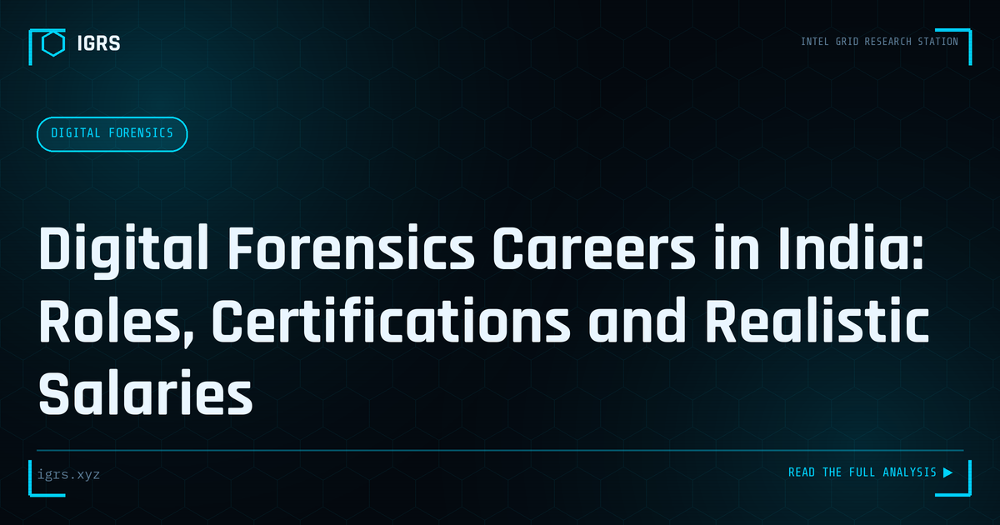

Digital Forensics Careers in India: Roles, Certifications and Realistic Salaries
| File No. | OD-006/2026 |
| Subject | Career pathway analysis for digital forensics and cyber investigation roles in India |
| Category | Careers |
| Author | Manuj Kumar Pandey |
| Published | 2026-05-14 |
| Reading time | 12 minutes |
What digital forensics work actually involves in India, which certifications matter, what salaries look like, and how to break in — from someone working in the field.
A Career in Digital Forensics in India
Digital forensics — recovering and analysing electronic evidence — is a specialised, intellectually rewarding field with strong demand in India across law enforcement, corporate security, and consulting. For those drawn to investigation and technology, it offers a compelling career path. This guide maps the digital forensics career landscape in India, covering the skills, qualifications, and opportunities that define it.
What Digital Forensics Involves
Digital forensics is the practice of recovering, preserving, and analysing electronic evidence from devices and systems in a manner that is sound and admissible in court. Forensic examiners investigate computers, mobile devices, networks, and cloud systems to reconstruct events, recover deleted data, and establish facts. The work combines deep technical skill with investigative rigour and an understanding of legal requirements — making it both challenging and consequential.
Specialisations Within Forensics
| Specialisation | Focus |
|---|---|
| Mobile forensics | Phones and tablets |
| Computer forensics | Disks and operating systems |
| Network forensics | Traffic and intrusions |
| Cloud forensics | Cloud-hosted evidence |
| Malware analysis | Examining malicious code |
Essential Skills
Digital forensics demands a strong technical foundation — understanding operating systems, file systems, storage, and networks — combined with proficiency in forensic tools and methods. Equally important are meticulous attention to detail, analytical thinking, and patience, since forensic work involves careful, methodical examination. An understanding of the legal framework, including the BSA evidence requirements, is essential, as forensic findings must withstand legal scrutiny. This blend of technical, analytical, and legal competence defines the skilled examiner.
Tools of the Trade
Forensic examiners work with specialised tools. For mobile forensics, platforms like Cellebrite and MSAB XRY extract device data. For computer forensics, tools like Autopsy support disk analysis. Network analysis uses tools like Wireshark. Familiarity with these industry-standard tools is important for forensic roles, and many employers value hands-on proficiency. Building experience with available and open-source forensic tools develops the practical capability that employers seek.
Qualifications and Certifications
While degrees in computer science, cybersecurity, or forensics provide a foundation, certifications specifically validate forensic skills. Recognised forensic certifications demonstrate expertise to employers and are valued particularly for law enforcement and consulting roles. Combined with practical experience, these qualifications help candidates establish credibility and progress. The field values demonstrable skill, so building a portfolio of practical forensic work alongside certifications strengthens career prospects.
Career Opportunities in India
Digital forensics careers in India span law enforcement and central agencies, corporate security and incident response teams, forensic consulting and service firms, and the legal and audit sectors. Demand is driven by rising cybercrime, regulatory requirements, and the increasing centrality of digital evidence in investigations and litigation. For those with the right skills, opportunities exist across the public and private sectors, with consulting and specialised roles offering particularly strong prospects.
Building Your Forensics Career
For aspiring digital forensics professionals in India, the path combines building technical foundations, gaining hands-on experience with forensic tools and methods, understanding the legal framework, and earning relevant certifications. Continuous learning is essential as technology and devices evolve constantly. The field rewards those who combine genuine technical skill, investigative rigour, and legal understanding — offering a career that is intellectually demanding, professionally respected, and genuinely consequential, contributing to justice and security through the recovery and analysis of digital evidence. For those drawn to the intersection of technology and investigation, digital forensics offers one of the most rewarding specialisations available.